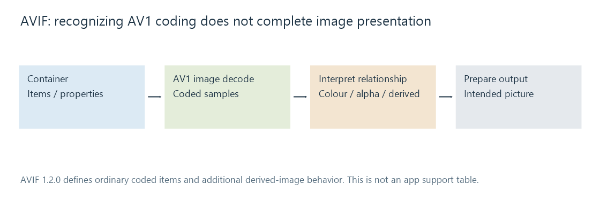

AVIF images
AVIF defines AV1-coded images within an image-file container, with specified colour, alpha and derived-image arrangements beyond the capabilities of a video decoder alone.
AVIF uses AV1 image coding within an image-file format. Its reader must recover the intended picture and interpret the file's presentation information.
The reference here is AOM AVIF 1.2.0, a Final Deliverable dated 16 October 2025. That version context matters when describing newer derived-image features.
Coding and file presentation describe different boundaries
A conventional AV1 image item provides coded picture samples. The file describes how those items and their properties belong to the image presentation, including applicable colour and auxiliary information.

A successful AV1 video playback test therefore does not fully test an app's AVIF image path. The video route can use different parsing, decoder configuration, memory and output preparation.
For Emby artwork/photos, identify what the server image processor and receiving app actually exchange. That delivered representation determines the remaining rendering requirements even when the original source used AVIF.
Precision depends on the representation
Ordinary AV1 image items use their applicable 8-, 10- or 12-bit coding. AVIF 1.2.0 also defines sample-transform derived images that can combine item information to extend sample precision beyond that ordinary range.
Consequently, “all AVIF images are limited to twelve bits” is not an accurate description of the full referenced format. A reader supporting ordinary coded items does not necessarily implement every derived-image feature.
| Observation | What it establishes |
|---|---|
| File recognized as AVIF | Container identification |
| Main coded item decodes | That item/configuration can be recovered |
| Derived/auxiliary information interpreted | Additional presentation requirements can be fulfilled |
| Result presented correctly | Colour, alpha and geometry agree with the selected output path |
These observations are useful separately when comparing an original photo and a browsing derivative.
Colour and transparency need their intended output
Higher precision allows finer numerical levels. HDR also requires appropriate colour/luminance interpretation and display handling; bit depth alone does not make it HDR.
An alpha-bearing presentation can additionally require a compatible auxiliary path. Converting it into an opaque JPEG commits the output to a background, rather than retaining independently compositable transparency.